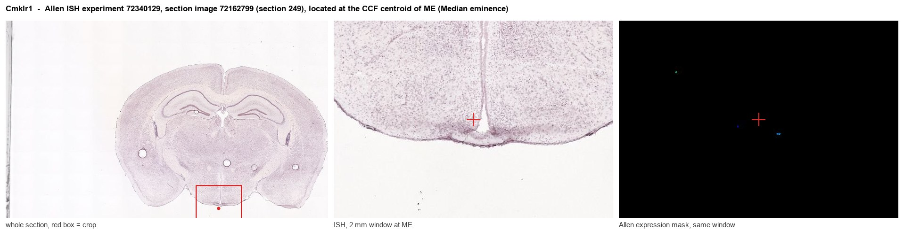
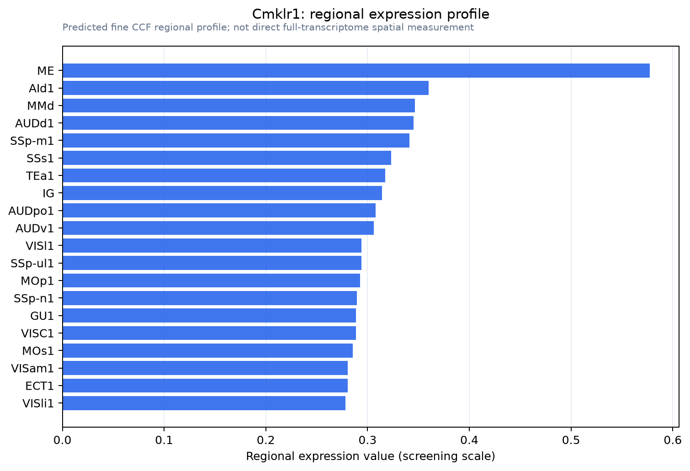

Cmklr1
Chemerin-like receptor 1 (Chemokine-like receptor 1) (G protein-coupled receptor DEZ)
Spatial tier: REGION_BIASED · Class: GPCR · Top region: ME (Median eminence) · Positive regions: 44/554
43.7Discovery Score
36.3Targetability Score
CEvidence grade C
What this means: Cmklr1: fine CCF profile is region-biased toward ME (top regions: ME, AId1, MMd, AUDd1, SSp-m1); this is a discovery lead, not direct proof.
Function in ME: evidence, prediction, innovation
- Gene function
- Cmklr1 (ChemR23) encodes a Gi/o-coupled chemoattractant GPCR whose main agonist is the adipokine chemerin after C-terminal proteolytic activation; resolvin E1 is also reported to act at it. Signalling lowers cAMP, mobilises calcium and recruits beta-arrestin2, driving leukocyte chemotaxis, adipogenesis and glucose handling.
- Region function
- The median eminence is a circumventricular organ where hypophysiotropic terminals release hormones into fenestrated portal capillaries, and whose tanycytes and ependymal cells sense circulating metabolic signals and remodel seasonally.
- Published in this region
- direct Helfer 2016 identified chemerin as a retinoic-acid target in photoperiodic F344 rats and localised chemerin and its receptors, including CMKLR1, to tanycytes and ependymal cells of the hypothalamic ventricular zone and median eminence, higher under long than short photoperiod; chronic ICV chemerin mimicked the long-day rise in food intake and raised vimentin, implicating tanycyte remodelling. Yun 2022 showed arcuate CMKLR1 knockdown and alpha-NETA alter body weight. Allen ISH gives ME 0.35-0.53 versus 0.17 for grey matter (experiment 72340129).
- Predicted function
- Prediction: tanycytic rather than neuronal CMKLR1 is the median eminence receptor for circulating chemerin, converting adiposity signals into cytoskeletal remodelling that changes barrier permeability and terminal access to portal blood. Tanycyte-restricted deletion or local alpha-NETA should abolish photoperiodic and diet-driven remodelling, blunt seasonal weight cycling and reduce hyperphagia after a switch to long photoperiod.
- Innovation
- ★★★☆☆ 3/5 Tanycyte localisation and ICV pharmacology exist in rat, but no cell-type-specific genetic test in the median eminence has been reported.
- Tools
- Cmklr1 knockout mice (Ernst 2012); selective antagonist alpha-NETA (Graham 2014); chemerin-9; validated anti-CMKLR1 shRNA lentivirus for stereotaxic knockdown (Yun 2022); IUPHAR-curated chemerin receptor ligands (Kennedy 2018).
- References
Direct evidence located at the region

Allen ISH experiment 72340129, section image 72162799 (section 249): the section that contains the CCF centroid of Median eminence according to the Allen image-to-atlas alignment (reference_to_image), with a 2 mm window around that point. Left: whole section, red box = window. Middle: ISH signal. Right: Allen's expression-mask view of the same window. open this image in the Allen viewer
Look it up yourself: Allen Mouse Brain ISH for Cmklr1Allen reference atlas: ME (structure 10671)ABC Atlas MERFISH viewer(in the ABC Atlas choose dataset MERFISH-C57BL6J-638850-CCF, colour cells by gene "Cmklr1" or by parcellation_substructure "ME")All genes confined to ME + 3-D brain
Direct spatial evidence
MERFISH REGION LOCATOR

Regional expression figure

Predicted WMB × fine-CCF profile; not direct full-transcriptome spatial measurement.
Spatial profile
Evidence and specificity
- Evidence status
- PREDICTED_FINE
- Direct sources
- None; predicted localization only
- Exclusive threshold
- 12 positive regions out of 554
- Spatial specificity
- 0.294
- Top-region fraction
- 0.049
- Filter status
- PASS
Interpretation limits
- Cell-type-to-region projection is imputed expression, not direct spatial measurement.
- Adult reference atlases do not establish stability across age, sex, strain, state, or disease.
- Transcript abundance does not guarantee protein abundance or genetic-tool performance.